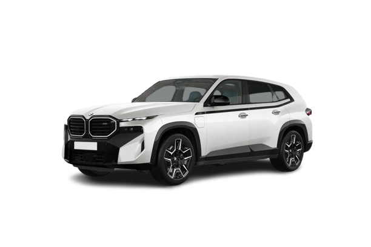
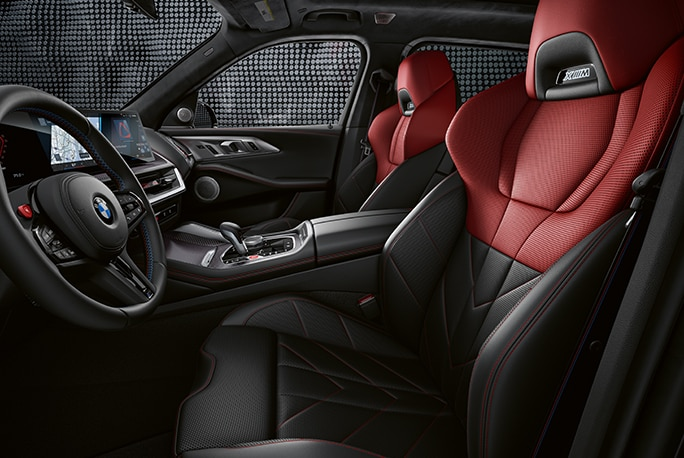
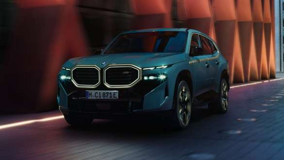
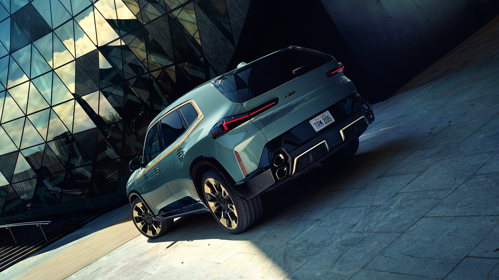
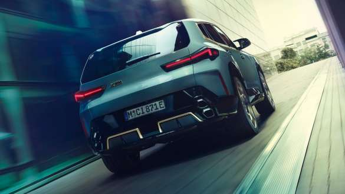

BMW
XM SUV
Exclusive, expressive, electrified: The first-ever BMW XM
brings together cutting-edge drive system technology
with a spectacular vehicle concept. This
high-performance car dressed in Sports Activity Vehicle
(SAV) clothing is fitted with a newly developed plug-in
hybrid system delivering maximum output of 480 kW (653
hp). Compromise-free design and intoxicating performance
generate a full-house exclusivity and elevate the BMW XM
to a completely new model in the luxury segment.
Choose your color

Handle it like a pro.
More powerful, more exclusive, more extravagant: The BMW
XM Label Red brings together an M HYBRID system with
extra power and bespoke design accents that showcase its
standout performance attributes to unmistakable effect.
With a system output of 550 kW (748 hp), the BMW XM
Label Red is the most powerful BMW M model ever made.
The distinguishing features of the
performance-maximising XM variant include an accent band
in Toronto Red metallic, although a black accent band
also can be specified.
HIGH-PERFORMANCE HYBRID.
High-performance is electrified: For the very
first time an M vehicle is equipped with M
TwinPower Turbo V8-cylinder petrol engine
plug-in hybrid technology. The M hybrid drive
stands for pure driving pleasure, superior power
delivery and the distinctive M sound. Thanks to
the virtuoso interaction with a 120 kW
electrical machine, the 360 kW (489 hp)
4.4-litre V8 of the BMW XM thrusts forward
unbridled – not least thanks to two
turbochargers, fully variable Valvetronic valve
control and high-precision injection. The system
output of the BMW XM is 480 kW (653 hp).
THE FIRST-EVER BMW XM
ULTIMATE ELECTRIFIED M POWER BMW M
is renowned for exceptional engineering – and this
luxury performance SUV pulls out all the stops with
standard Adaptive M Suspension Professional, an M
Sport Differential, and the intelligent all-wheel
drive power of M xDrive.
2025 BMW XM SUV




MSRP
$161,675–$200,175
Adaptive M suspension
Professional.
In addition to characteristic M driving pleasure,
the adaptive M suspension Professional promises
comfortable everyday usability. The running gear
concept includes electronically controlled shock
absorbers, active stabilisers and Integral Active
Steering. Active roll stabilisation with active
rolling comfort counteracts side-to-side movements
of the body – when cornering or driving over
potholes and other obstacles. The advantages of this
system are especially evident when using a
particularly dynamic driving style: the vehicle
becomes significantly more agile with easier
cornering. In addition, the absorption of lateral
forces increases comfort for the passengers in the
second row of seats. Integral Active Steering also
supports more dynamic and safer driving dynamics. At
higher speeds, the rear wheels turn parallel to the
front wheels to stabilise the vehicle. In the lower
speed range, the rear wheels steer in the opposite
direction, making your vehicle more agile.
8-speed M Steptronic sport transmission.
From smooth sailing to dynamic driving with very
sporty gear changes: The fourth-generation 8-speed M
Steptronic sport transmission puts a wide range at
your disposal. In addition to automatic gear
selection, you also have the option of sporty manual
gear shifts via paddles on the steering wheel. In
SPORT mode and by actuating the electronic selector
lever (switch: S/M), experience gear shifts that are
configured for the best possible performance. The
sporting character has two elements: The first is
that the engine always maintains a high engine speed
range at which it can access plenty of power output.
The second element shortens the switching sequences
even further. The Launch Control function permits
maximum acceleration from a standing start. When set
to automatic mode, the gear selection adapts itself
to suit individual driving styles. In manual mode,
however, an optimum shift indicator gives you
recommendations for efficient driving. The Shift
Lights (in the instrument cluster and on the BMW
Head-up display) also help in highly dynamic driving
in the upper engine speed range. At high speeds, the
eighth gear reduces engine speed and fuel
consumption. This is also where the powerful
converter clutch comes into play. In short: The
8-speed M Steptronic sport transmission of the
fourth generation works together with the engine to
deliver smooth gear shifts and top levels of power
delivery and shift comfort as well as impressive
efficiency.
M Sport brakes.
The bespoke M Sport brakes comprise six-piston,
fixed-calliper brakes at the front and
single-piston, floating-calliper units at the rear.
The system employs newly improved lightweight brake
discs that strike an even finer balance between
performance and weight and have been purpose
engineered to handle the elevated dynamic
performance capabilities of the BMW XM.
M Setup.
For plug-in hybrid: At temperatures below minus 10
degrees Celsius,
the fully electric drive system is only available
after a few kilometres
of driving, once the battery has heated to
operational temperature.
Integrated M specific braking system.
The latest-generation integrated braking system
featured in the BMW XM generates a degree of
stopping power that is matched exactly to the
driver’s inputs, while also producing consistent
pedal feel. The M specific version of the integrated
braking system presents the driver with two pedal
feel settings, allowing them to choose between more
comfort-oriented or very direct execution of brake
pedal inputs in the M Setup menu.
M Sport differential.
The M Sport differential delivers the best possible
performance on the road. It variably distributes the
driving power between the rear wheels thus improving
traction and driving stability in various situations
– be it when accelerating out of bends, at high
cornering speeds or with differing road conditions.